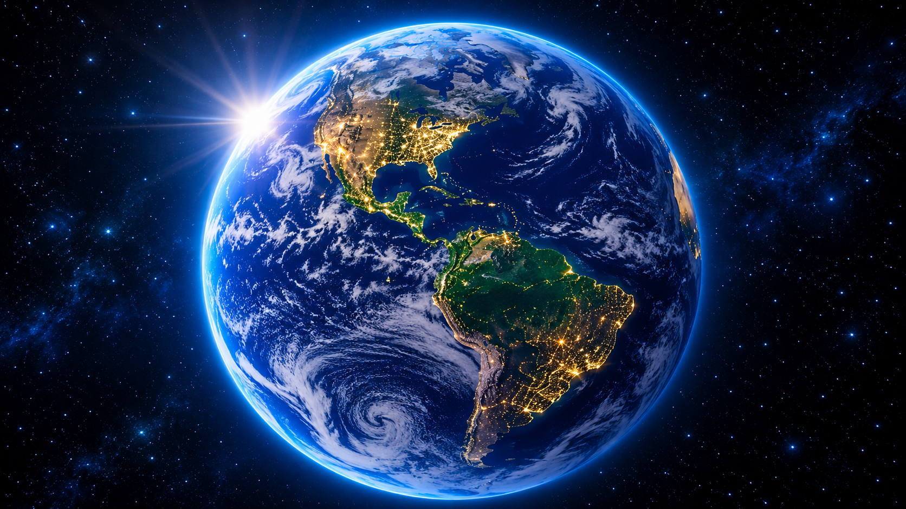

Temperature
Explore temperature patterns and variations across Earth.
NASA SPACE APPS CHALLENGE 2026
What if you could hear our changing planet? Earth Information Jukebox transforms NASA Earth visualizations into dynamic sound, creating a new way to experience and understand our planet.

A NEW WAY TO EXPERIENCE EARTH
NASA provides extraordinary visualizations of our changing planet. However, visual information alone cannot communicate equally to everyone. Our project explores how visual patterns can be translated into sound, creating an additional way to experience Earth science.
EXPLORE OUR PLANET
Explore live weather information through temperature, wind and humidity.
Explore temperature patterns and variations across Earth.
Understand patterns of atmospheric movement across the planet.
Explore moisture levels and changing humidity conditions.
FEATURED NASA VISUALIZATION
Observe changes in nighttime lighting across different regions of Earth between 2012 and 2023.
This NASA visualization presents changes in nighttime lighting intensity between 2012 and 2023.
The visualization includes regions where lighting increased, decreased or remained relatively unchanged.
Nighttime lighting is an observable feature of Earth's surface. Changes in lighting do not directly measure population, wealth or economic development.
INTERACTIVE AUDIO EXPERIENCE
Turn visual information into sound and experience Earth's changing patterns through audio.
The sonification engine analyses the NASA Night Lights video and translates visual features into changing sound.
Brightness of illuminated pixels influences sound pitch.
Horizontal image position influences stereo sound position.
Purple, orange and neutral lighting regions produce different sound characteristics.
The density of illuminated pixels influences sound loudness.
ACCESSIBLE EARTH SCIENCE
Earth science should be accessible to everyone. Our voice-guided experience provides spoken information about current weather conditions.
Search for a city, country or region to hear a live weather report covering temperature, wind and humidity. Each section is introduced clearly in a sequential spoken experience.
Waiting to begin.
Semantic page structure and accessible descriptions help screen-reader users navigate the experience.
Interactive controls can be accessed using the keyboard.
Data-driven sonification provides an alternative way to experience visual information.
Sequential spoken explanations make Earth information easier to follow without relying on visuals.
BEHIND THE EXPERIENCE
Our system connects NASA visual information with an audio processing engine.
A NASA Earth visualization provides the visual information.
Image processing examines visual features such as brightness, position and colour.
Visual features are mapped to audio characteristics such as pitch, intensity, timbre and stereo position.
The audio engine produces sound that changes with the analysed visual information.
The sound mappings used in this project are our own design choices. They are not official NASA sound mappings.
Our objective is to communicate visual patterns through meaningful and understandable audio.
DATA AND REFERENCES
This project uses NASA scientific visualizations and resources.
Visualization of changes in nighttime lighting between 2012 and 2023.
View NASA SourceNASA's Earth Information Center visualization resources.
Explore NASA ResourcesNASA visualization of ocean surface currents and temperature.
View NASA VisualizationNASA visualization of atmospheric aerosols.
View NASA VisualizationNASA atmospheric and air quality model visualizations.
View NASA Visualization